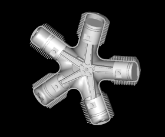

Radial Engines for simpletons like me
If you have the Suck, Squeeze, Bang and Blow part of reciprocal engines down,
you may still be asking yourself, just how does a radial do its thing?
Well this little GIF says a whole lot, if pictures are worth many words.
Enjoy.
